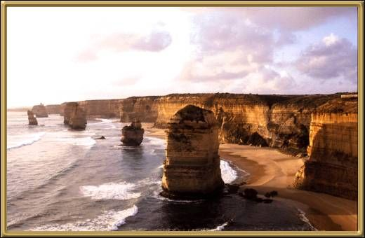

This is yet another view from the Great Ocean Road, at Port Campbell. They are quite a spectacular sight, although I've never stopped to count if there really are twelve! There used to another rock formation near these, called London Bridge, but the bridge section that connected the two towers collapsed quite spectacularly a couple of years ago. Fortunately the people who were on it at the time were not hurt!
Photographer: Someone in the family.